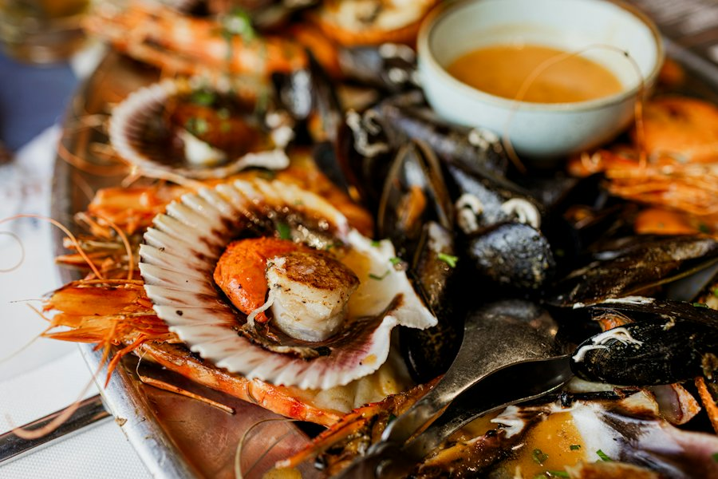

Une brasserie de bord de mer, simple et conviviale, au 11 rue du Port. On y vient pour un repas, un verre en terrasse ou un cocktail en regardant les bateaux.
Cuisine faite maison, produits soigneusement travaillés, un lieu simple, convivial et authentique face au port.
C'est ainsi que Le Quincy se présente sur sa page. La carte suit les produits du moment ; elle est donnée sur place et par téléphone.
Plats de brasserie cuisinés sur place, à partir de produits frais.
Boissons, apéritifs et cocktails, en salle ou en terrasse.
Des soirées à thème sont organisées au fil de l'année et annoncées sur Facebook.

Aux beaux jours, la terrasse donne directement sur le port de Lesconil. Pour une grande tablée ou un soir de week-end, mieux vaut appeler avant de venir.
Service jusqu'en soirée, fermeture vers 22h30. Les jours d'ouverture changent selon la saison : ils sont tenus à jour sur Facebook et Instagram, ou par téléphone.